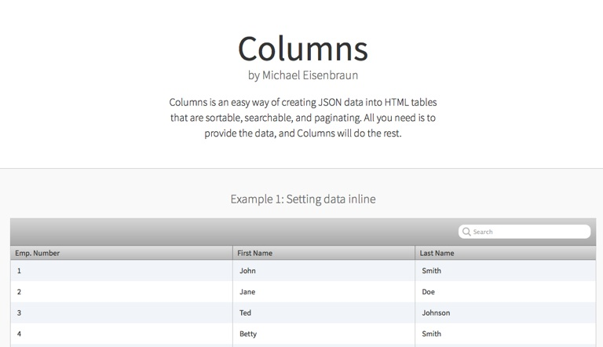
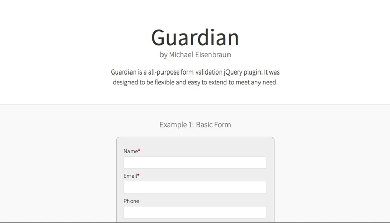
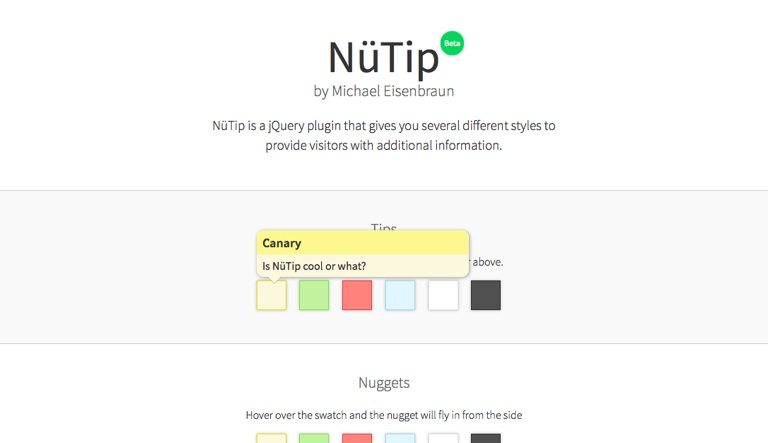

My Projects

Columns
TYPE: jQuery Plugin
A jQuery plugin to create a HTML tables from a JSON data source. It supports paging, searching, sorting, and theming. Columns is flexible and extensible with an API and support for plugins and custom templates.

Guardian
TYPE: jQuery Plugin
Guardian is a all-purpose form validation jQuery plugin. It was designed to be flexible and easy to extend to meet any need.

Nütip
TYPE: jQuery Plugin
A jQuery plugin that provide easy way of providing additional information to your web site.